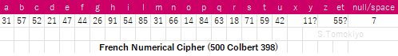

Numerical ciphers (figure ciphers, digit ciphers) were used early in Italy but the timing of its adoption in other countries varies. The general trend is that graphic symbols gradually gave way to Arabic figures.
In France, during the reign of Henry III, typical ciphers were in graphic symbols but there were instances of numerical ciphers (another article, my blog). In Henry IV's time, use of figures (with diacritics) in the nomenclature was common. While graphic symbols were typically used in the substitution alphabet, some already employed figures in the alphabet, too (another article).
In the early reign of Louis XIV, fully numerical ciphers were common but they tended to employ diacritics to expand the vocabulary, the practice continuing from the reigns of Henry IV and Louis XIII. Louvois' cipher from 1676 is the earliest I know of French numerical ciphers with three-digit figures (without diacritics) (another article).
Early numerical ciphers in France tended to be related to Italy. Use of a numerical cipher by the Duke of Nevers (who came from Mantua) as early as 1571 was in a letter in Italian (my blog).
The introduction of numerical ciphers was even earlier according to Desenclos (2018), who says symbols gradually disappear from the 1560s (p.15). Among my collection, ciphers of Paul de Foix (1565) and the Cardinal de Chastillon (1568) are early examples employing figures in the nomenclature (another article).
Apart from Italian relations, Henry IV's cipher (1587) before his accession was numerical (another article, my blog). Below is another specimen of a French numerical cipher from the 1570s.
Transition of ciphers is not uniform even in a given country.
In 1593, Jerome Gondy in Italy and the Duke of Nevers used an extensive symbol cipher (no.60 of the Nevers Collection) in their correspondence with the King or Revol, his secretary state, while they used a numerical cipher (no.46 of the Nevers Collection) with Vivonne (Wayback Machine).
For this topic, a highly relevant paper is Desenclos and Lasry (2024). They observe, among others, Henry IV and the Duke of Nevers usually used a symbol cipher in 1591-1594 but a numerical cipher was used in one letter in 1592 (which I reported in my blog) and point out that the latter was countersigned by Martin Ruzé de Beaulieu unlike the others countersigned by Louis Potier de Gesvres.
In the 1660s, Colbert de Croissy used figures in both the alphabet and the nomenclature in Italy and then in Germany, but somehow he reverted to symbols in the alphabet in London (Wayback Machine, my blog).
One advantage of numerical code over graphic symbols is that the code numbers can be ordered. A table arranged in numerical order facilitates the decoding work, whereas in symbol ciphers, there is no natural ordering, though there was an attempt to sort symbols (another article).
The downside is that it could also help codebreaking if the arrangement of words and numbers are in parallel. This can be avoided by random arrangement, in which case the correspondents can use separate tables for encoding and decoding: the encoding table is arranged in alphabetical order, while the decoding table is arranged numerically. Some authors say two-part code was introduced by Rossignol (Bazeries p.45, cf. Kahn p.161), but there is nothing to definitely attribute the invention to him.
Le Tellier and Jean-Baptiste Colbert used two-part code in December 1650, while they had used one-part code in November(my blog, another article). Actually, the arrangement in the December code is not completely random and it is not clear whether it was really "two-part" (i.e., consisted of separate encoding/decoding tables).
The first code with completely random arrangement (even mixing single letters with nomenclature elements) known to me is Louvois' Code (1676) and other ciphers related to him had the same characteristics. On the other hand, as listed in another article, codes with partially random arrangement (items (1C)(2)(3)(4)(8B)) were also in use.
Below are two instances of numerical ciphers.
Cinq Cent de Colbert 398 includes some undeciphered text in a simple numerical cipher in the following letters.
p.379 14 December 1576 from Prague (to Catherine de Medicis)
p.405 12 January 1577 signed "Le Docteur ..."
p.519 16 October 1577 signed "D. l'Abbe"
p.575 without date or signature; almost entirely in cipher (inserted between a letter of 2 January 1578 (p.573) and a letter of 11 January 1578 to "Madame" (p.577) signed "le Docteur l'Abbe")
The cipher is of the simplest kind:

It is not a pure monoalphabetic cipher. There are some nomenclature entries: 23(elle), 38(et?). (These suggest a possibility that the cipher actually had fuller entries but the writer used only a very limited part of it.) One instance of 45=I may be an error for 54.
Among the two-digit symbols, "7" for space is a single digit. It is accompanied by dots on both sides to avoid ambiguity. (Some French numerical ciphers have variable length symbols written continuously without no marking (my blog gives instances of Henry de la Tour and Duke of Nevers, Duke of Lorraine. This practice was common in Italy (another article).)
The above key will allow reading the content. For example, some blocks in cipher reads as follows, in which color indicates text in clear:
BnF fr.18989 includes two letters from Prague (1602).
f.503 20 April 1602, Prague, Ancel to Henry IV
f.556 14 December 1602, Prague, Sr de Bougis to Sr de Villeroy
The figures in the ciphertext includes dots and commas, which often occur between digits. The digits in Ancel's letter form two-digit figures, and the dots and commas are written below the figure or between the digits. Two-digit code symbols with inserted diacritics between the digits are a unique feature of this cipher.
This turns out to be the same as the cipher used in another letter from Ancel (1601) in BnF Dupuy 63 (see another article) (called "A Cipher of Henry IV's Informant (1601)" therein). The new letter allows updating the table as follows (36=A in my previous reconstruction is corrected to NULL).
Guillaume Ancel was a French ambassador at the court of Rudolph II in Prague (British Museum).
The similar cipher in Sieur de Bougis's letter does not match Ancel's. (The phrase "la maison d'Autriche" occurs on f.504 in Ancel's letter (3:5[la] 5:9[ma] 20[i] 7,9[so] 24[n] 15[d] 7_3[Autriche]) but the same phrase, which occurs in the interlinear decipherment of f.556, does not seem to have corresponding figure sequence.)
The latter ciphertext is a bit too short to allow reconstruction, but if the interlinear decipherment can be read, there may be some hope. My transcription of the ciphertext is as follows:
S.Tomokiyo (2019-2023), "French Ciphers during the Reigns of Charles IX and Henry III"
S.Tomokiyo (2015-2024), "French Ciphers during the Reign of Henry IV of France"
S.Tomokiyo (2020-2025), "French Ciphers during the Reign of Louis XIII"
S.Tomokiyo (2017-2025), "Ciphers Early in the Reign of Louis XIV"
S.Tomokiyo (2015-2025), "French Ciphers during the Reign of Louis XIV"
S.Tomokiyo (2017-2019), "A Decoding Table Sorted by Symbol Similarity in a French Cipher for Henry IV, Duke of Nevers, etc."
Camille Desenclos and George Lasry (2024), "An early French digit cipher: deciphering a letter from the King of France to the Duke of Nevers (1592)" (HistoCrypt 2024)
Camille Desenclos (2018), "Unsealing the Secret: Rebuilding the Renaissance French Cryptographic Sources (1530-1630)" (HistoCrypt 2018)